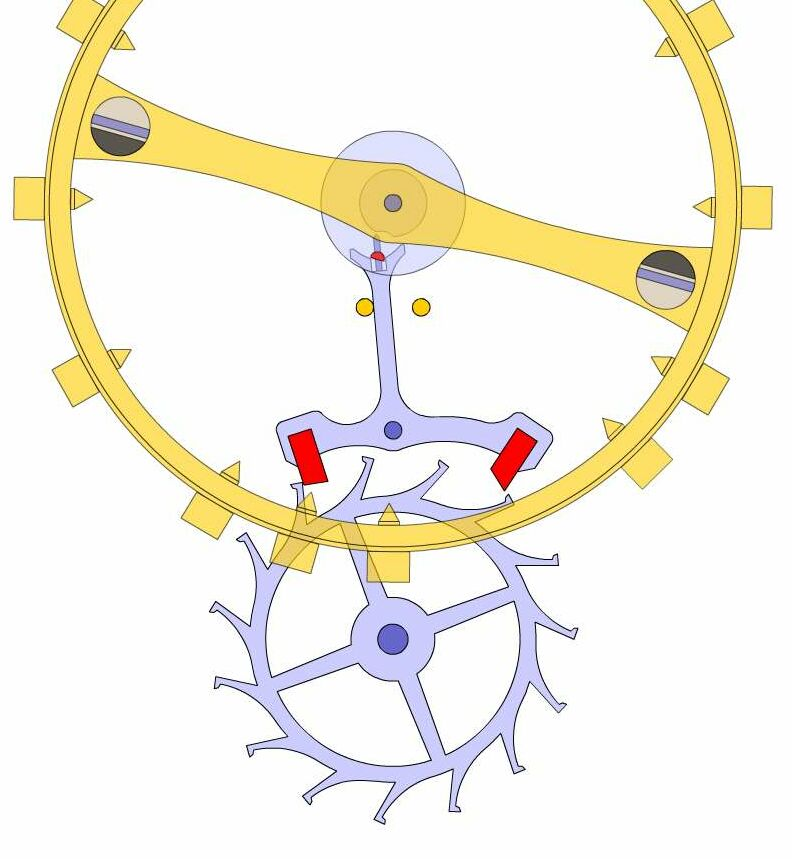
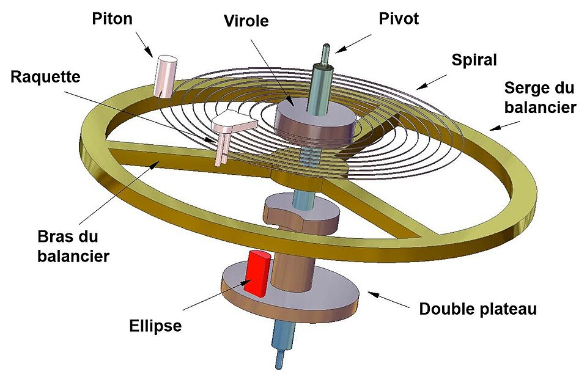

7. Distribution : L'Échappement à Ancre Suisse
- Composants Clés : Roue d'échappement, Ancre suisse avec rubis, Double plateau avec ellipse.
- Fonction : Transformer la rotation en oscillations et distribuer l'énergie.

1
2
3
4
5
6
7
8
1 Corps d'ancre
2 Levée d'entrée
3 Levée de sortie
4 Roue d'échappement
5 Dard
6 Fourchette
7 Cheville
8 Double plateau
📷 FEUILLET MANUSCRIT ORIGINAL (01-07) — Échappement à Ancre Suisse
7B. Approfondissement Technique : Anatomie Fonctionnelle de l'Organe Réglant
L'organe réglant est le cœur isochrone de la montre mécanique. Il assure le découpage rigoureux du temps par ses oscillations régulières. La maîtrise de ses sous-ensembles (liaisons, guidages et impulsion) est indispensable pour comprendre la chronométrie.

📷 TAVOLA TECNICA D'ATELIER — Anatomie fonctionnelle de l'organe réglant et de l'ensemble balancier-spiral.
Description détaillée des composants clés de l'ensemble balancier-spiral :
-
1° Le Piton : C'est la cheville d'ancrage fixe qui immobilise l'extrémité extérieure du spiral sur le pont de balancier. Il constitue le point d'ancrage fixe externe de l'ensemble élastique.
-
2° La Virole : Petit anneau métallique central serti de manière micrométrique sur l'axe du balancier, dans lequel est fixée et immobilisée l'extrémité intérieure du spiral. Elle assure la liaison directe entre le ressort spiral et l'axe mobile.
-
3° Le Pivot : L'extrémité extrêmement fine et polie de l'axe du balancier. Les pivots tournent au sein de rubis (coussinets) et subissent des contraintes mécaniques extrêmes en cas de choc, d'où l'importance vitale des systèmes de protection (type Incabloc).
-
4° Le Spiral : Ressort élastique enroulé selon une courbe mathématique précise (généralement en alliage amagnétique à base de nickel ou de silicium). Il fournit le couple de rappel élastique permanent qui ramène constamment le balancier à sa position d'équilibre neutre.
-
5° La Serge du Balancier : L'anneau circulaire périphérique du balancier. Sa masse et son diamètre déterminent le moment d'inertie de la pièce. C'est sur la serge que l'on pratique l'équilibrage dynamique (masselottes ou vis de réglage).
-
6° Les Bras du Balancier : Les rayons de liaison rigides reliant le moyeu central (ou l'axe) à la serge extérieure, conçus pour offrir une rigidité maximale tout en minimisant la prise au vent et le poids.
-
7° La Raquette : Organe de réglage mobile doté de deux goupilles entre lesquelles glisse le spiral. En déplaçant la raquette, l'horloger modifie la longueur active de la spirale, ce qui permet d'ajuster précisément la marche (avancer ou retarder la montre).
-
8° Le Double Plateau : Double disque calé sur l'axe du balancier, comprenant l'encoche de sécurité et servant de support direct à l'ellipse d'impulsion.
-
9° L'Ellipse (Cheville d'impulsion) : Un petit cylindre rigide en rubis synthétique rouge solidement planté sur le double plateau. C'est le point de contact cinématique crucial : l'ellipse reçoit l'impulsion de la fourchette de l'ancre à chaque oscillation (pour entretenir le mouvement) et donne l'impulsion de déclenchement à l'ancre.
⏱️ Principe Isocrate : La période d'oscillation du balancier-spiral dépend de son moment d'inertie et de la raideur du ressort. Toute variation de la longueur active de la spirale (via la raquette) modifie instantanément la fréquence de la montre.
8. Régulation : Le Balancier-Spiral & Fréquences d'Oscillation
| Fréquence (Ah) | Type de Calibre | Exemple | (Hz) | Alternances/Sec |
|---|
| 18'000 Ah | Historique / Poche | ETA 6497-1 | 2.5 Hz | 5 tics/sec |
| 21'600 Ah | Intermédiaire | ETA 6497-2 | 3.0 Hz | 6 tics/sec |
| 28'800 Ah | Standard moderne | ETA 2824-2 | 4.0 Hz | 8 tics/sec |
| 36'000 Ah | Haute Fréquence | Zenith El Primero | 5.0 Hz | 10 tics/sec |
📷 FEUILLET MANUSCRIT ORIGINAL (01-08) — Balancier-Spiral

📷 MISE EN ÉCHELLE — L'organe régulateur (pont, balancier et spiral) à côté d'une tête d'allumette, illustrant l'extrême miniaturisation de la micromécanique horlogère.
9. Anatomie du Balancier & Systèmes de Protection (Antichocs)
L'évolution majeure réside dans la protection des pivots (0.07mm) contre les chocs mécaniques.
- Composants de Liaison : Virole, Piton, Raquette.
📷 FEUILLET MANUSCRIT ORIGINAL (01-09) — Composants du Balancier